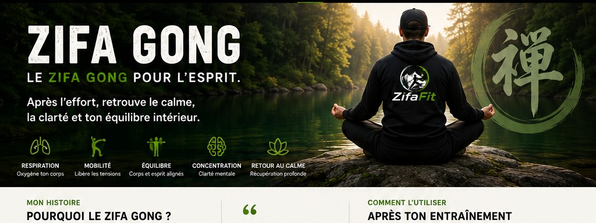
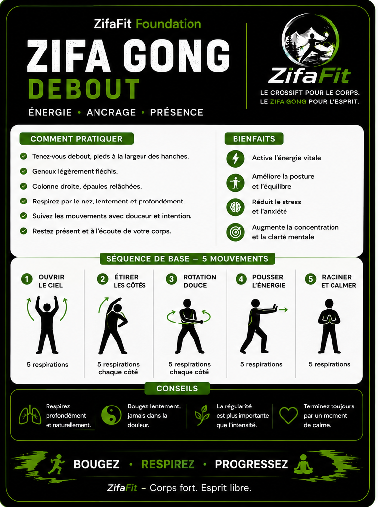
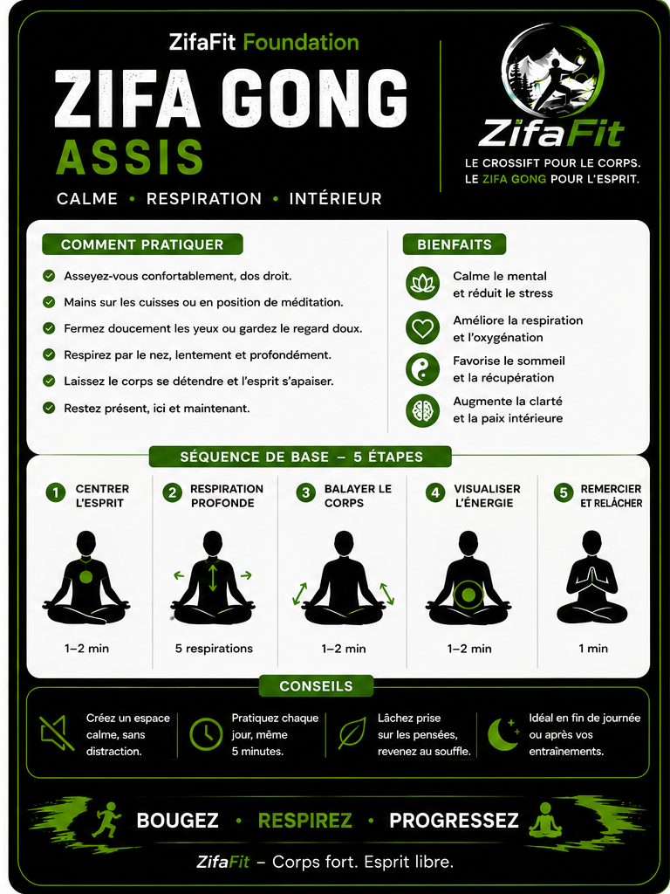

Respiration
Améliore la capacité respiratoire et oxygène le corps.

LE DEUXIÈME PILIER DE ZIFAFIT
Après l’effort, retrouve le calme, la clarté et ton équilibre intérieur.
POURQUOI J’AI CRÉÉ ZIFAFIT
Après 25 ans de service dans les Forces armées canadiennes, j’ai appris la discipline, la rigueur et le dépassement de soi. J’ai aussi compris à quel point le corps et l’esprit ont besoin de travailler ensemble.
Le CrossFit peut être une méthode d’entraînement extraordinaire, mais les cours en salle sont souvent coûteux et demandent beaucoup d’équipement. Pour plusieurs personnes, cela rend cette pratique difficilement accessible.
J’ai observé le même défi avec des disciplines comme le tai-chi et le qigong. Leurs bienfaits sur la respiration, la concentration et la détente sont réels, mais les longues routines peuvent prendre des années à apprendre. Je voulais que les gens puissent ressentir ces bienfaits dès le début, sans devoir mémoriser une chorégraphie complexe.
C’est de cette réflexion qu’est né ZifaFit : une méthode simple qui permet à chacun de faire un entraînement fonctionnel inspiré du CrossFit, avec peu ou pas d’équipement, puis de profiter d’une pratique de Zifa Gong accessible pour respirer, relâcher les tensions et revenir au calme.
Mon objectif est simple : rendre la force, le mouvement et la relaxation accessibles au plus grand nombre, peu importe l’âge, l’expérience ou le budget.
— Jocelyn Bérubé, fondateur de ZifaFit
COMMENT L’UTILISER
CE QUE LE ZIFA GONG TRAVAILLE
Améliore la capacité respiratoire et oxygène le corps.
Augmente la souplesse et la fluidité des mouvements.
Renforce l’équilibre physique et l’ancrage.
Clarifie l’esprit et développe la pleine présence.
Réduit le stress et favorise la récupération.
INCLUSES DANS LA COLLECTION FOUNDATION
Les cartes Debout et Assis sont incluses avec la collection Foundation et ne sont pas vendues séparément.


Elles accompagnent le deck Foundation afin de compléter l’entraînement par une vraie phase de respiration et de récupération.
Voir la collection FoundationPROCHAINES SÉANCES
Recevez les prochaines vidéos, séances et nouvelles du projet ZifaFit.
Le Zifa Gong n’est pas une performance. C’est un retour à l’essentiel.
Respire. Ralentis. Reviens à toi.